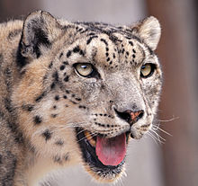
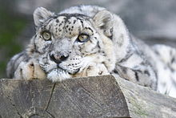
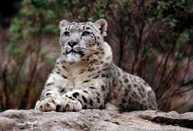
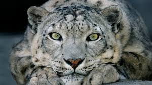
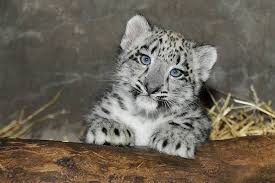
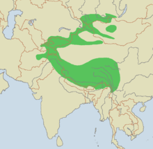

Is It Real?
The Snow Leopard is a large cat native to the mountain ranges of Central and South Asia. Their range spans from Afghanistan to Kazakstan and Russia in the north to India and China in the east. China contains about 60% of snow leopard habitat. The Panthera is endangered because their global population is estimated at 4,500 to 8,745 mature individuals.
What Exactly is a Snow Leopard?
Snow Leopards are mammals, they are carnivores, they can grow up to 4 to 5 foot, and usually weigh around 60 to 120 lbs. Snow Leopards prey upon the blue sheep of Tibet and the Himalaya, as well as the mountain ibex found over most of the rest of their range. Though these powerful predators can animals three times their weight, they also eat smaller fare, such as marmots, hares, and game birds.
    Conservation
There are three reasons why Snow Leopards are endangered. The first reason is that the bones, skin and organs of large cats are valuable in traditional Asian medicine. Also many of the people who live near snow leopards often earn less than 300 dollars per year and a poacher can get perhaps $200 for a dead snow leopard, so it isn't that hard to understand why snow leopards are at risk. Humans are a second reason that snow leopards are endangered. Humans have pushed further and further with their livestock into the snow leopard's habitat. Overgrazing damages the fragile mountain grasslands, leaving less food for the wild sheep and goats that are the snow leopard's main prey. The Snow Leopard Conservancy is just one of many organizations that are trying to help the troubled animals of the world. We can help this animals by speaking up about protecting wild life, staying informed, and by adopting a wild animal. A symbolic adoption helps save real animals in the wild.